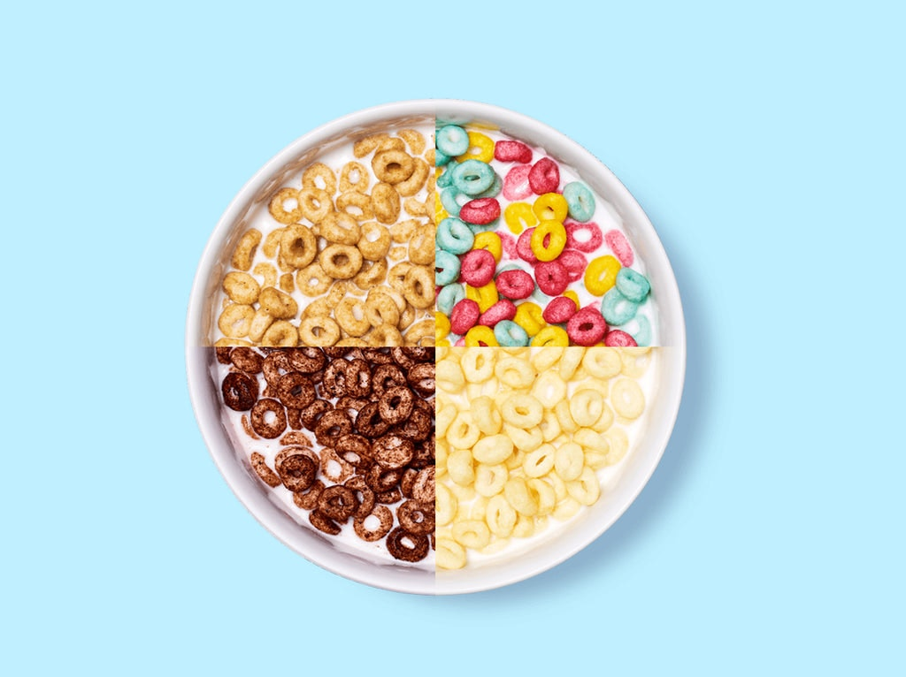

Cereal!
Home

Description
Milk, sugar, and convenience! Buckle up for this high speed excursion into quick eating!
Ingredients
- Milk; whole, skim, almond, coconut, use what your heart desires! Just not water. Please.
- Cereal of choice! I am partial to Cap'n Crunch myself.
- A bowl! A spoon! That's all!
Directions (Step-by-step
Here we go!
- Pour your cereal of choice into your food receptacle
- Pour your milk in afterward
- Grab your spoon and get to shoveling!